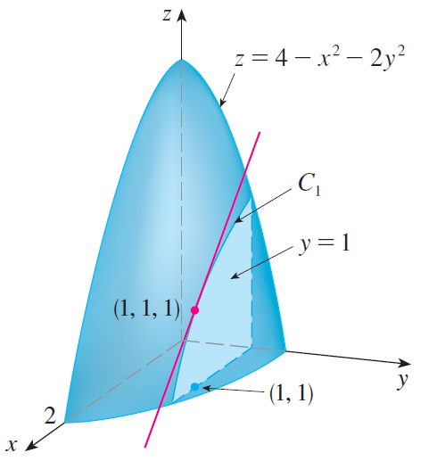
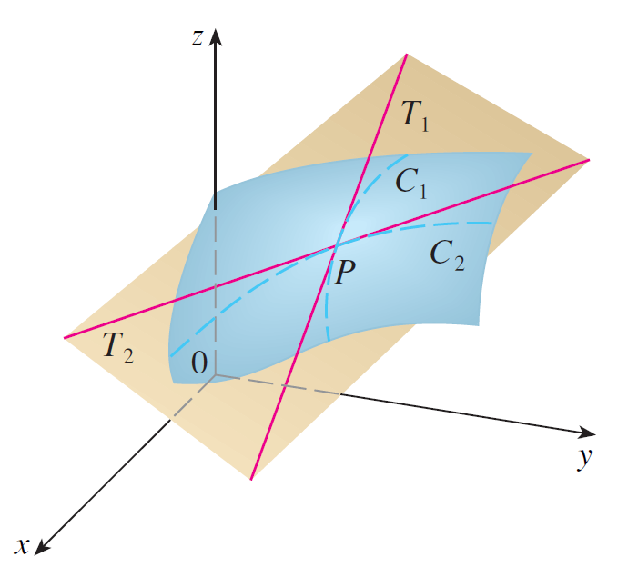

PARTE 2 · AULAS 09–15
Derivadas parciais, plano tangente e regra da cadeia
Taxas de variação coordenadas, derivadas de ordem superior, diferenciabilidade, aproximação linear, regra da cadeia e derivação implícita.
1. Derivadas parciais
Para calcular a variação em relação a uma variável, mantemos as demais fixas.
\[f_x(a,b)=\lim_{h\to0}\frac{f(a+h,b)-f(a,b)}{h}.\]
\[f_y(a,b)=\lim_{h\to0}\frac{f(a,b+h)-f(a,b)}{h}.\]

Derivadas de ordem superior
\[f_{xx}=\frac{\partial^2f}{\partial x^2}.\]
\[f_{yy}=\frac{\partial^2f}{\partial y^2}.\]
\[f_{xy}=\frac{\partial^2f}{\partial y\,\partial x}.\]
\[f_{yx}=\frac{\partial^2f}{\partial x\,\partial y}.\]
Clairaut. Se as derivadas mistas são contínuas em uma vizinhança do ponto, então \(f_{xy}=f_{yx}\).
Exemplo resolvido.
Para \(f(x,y)=x^2y+e^{xy}\),
\[f_x=2xy+ye^{xy}.\]
\[f_y=x^2+xe^{xy}.\]
Em \((1,0)\),
\[f_x(1,0)=0.\]
\[f_y(1,0)=2.\]
2. Plano tangente e linearização
\[L(x,y)=f(a,b)+f_x(a,b)(x-a)+f_y(a,b)(y-b).\]
\[z=L(x,y).\]

Exemplo resolvido — plano tangente.
Para \(f=x^2+2y^2\), em \((1,1)\),
\[f(1,1)=3.\]
\[f_x(1,1)=2.\]
\[f_y(1,1)=4.\]
Logo,
\[z=3+2(x-1)+4(y-1).\]
3. Diferenciabilidade
A existência das derivadas parciais não garante diferenciabilidade. Uma condição suficiente útil é a continuidade de \(f_x\) e \(f_y\) em uma vizinhança do ponto.
4. Regra da cadeia
Se \(z=f(x,y)\), \(x=x(t)\) e \(y=y(t)\),
\[\frac{dz}{dt}=f_x\frac{dx}{dt}+f_y\frac{dy}{dt}.\]
Exemplo.
Se \(z=x^2+y^2\), \(x=t^2\) e \(y=e^t\),
\[\frac{dz}{dt}=4t^3+2e^{2t}.\]
5. Derivação implícita
Se \(F(x,y,z)=0\) define localmente \(z=z(x,y)\) e \(F_z\neq0\),
\[z_x=-\frac{F_x}{F_z}.\]
\[z_y=-\frac{F_y}{F_z}.\]
Visualização no GeoGebra 3D
Abrir GeoGebra 3D ↗Abra o ambiente 3D para explorar geometricamente os objetos relacionados a este conteúdo.
Material organizado a partir das aulas da GCT054 e da bibliografia indicada no Plano de Ensino, especialmente Stewart (2014), Anton, Bivens e Davis (2014) e Thomas, Weir e Hass (2013).